Computing and Plotting#
Text provided under a Creative Commons Attribution license, CC-BY. All code is made available under the FSF-approved BSD-3 license.
Copyright (c) 2020, Felipe N. Schuch.
@fschuch
Initialization#
import xarray as xr
import numpy as np
from tqdm.notebook import tqdm as tqdm
import dask.array as da
import matplotlib
import matplotlib.pyplot as plt
Dask provides support for parallel computing and larger-than-memory arrays, both features are very useful for this application. For further information, see Dask’s Documentation.
import dask
from dask.distributed import Client
client = Client()
C:\Users\felip\anaconda3\lib\site-packages\distributed\node.py:155: UserWarning: Port 8787 is already in use.
Perhaps you already have a cluster running?
Hosting the HTTP server on port 62711 instead
http_address["port"], self.http_server.port
cases = [f"{s}-{us}" for s in "1.25 2.5 5.0 10.0".split() for us in "0 15 30".split()]
Layer-averaged quantities#
The complete spatio-temporal analysis of the relevant quantities is possible in a layer averaged context per width unit, that is computed according to the equations
For the vertical integration, \(x_{2r}\) represents the bed position and \(x_{2i}\) represents the interface between the underflow turbidity current and the ambient fluid, considered in this work as the position where \(u_1 \times c_t = 0.005\). This step has been done in the previous example (see 00-LA-and-Convert-to-NetCDF.ipynb), the datasets are available at Zenodo. After downloading them, the files for all cases can be loaded and concatenate in a single variable using:
paths = [f"LA-case-{case}.nc" for case in cases]
ds = (
xr.open_mfdataset(paths, concat_dim="case", combine="nested", compat = "no_conflicts")
.sel(t=slice(0, 4000))
.compute()
)
ds = ds.assign_coords({"case": cases})
C:\Users\felip\anaconda3\lib\site-packages\xarray\core\alignment.py:307: FutureWarning: Index.__or__ operating as a set operation is deprecated, in the future this will be a logical operation matching Series.__or__. Use index.union(other) instead
index = joiner(matching_indexes)
And we can show in the screen all the variables in the xarray.Dataset:
ds
<xarray.Dataset>
Dimensions: (case: 12, t: 1601, x: 801, y: 241)
Coordinates:
* t (t) float64 0.0 2.5 5.0 7.5 ... 3.992e+03 3.995e+03 3.998e+03 4e+03
* y (y) float64 0.0 0.1406 0.2812 0.4219 ... 33.33 33.47 33.61 33.75
* x (x) float32 0.0 0.3125 0.625 0.9375 ... 249.375 249.6875 250.0
* case (case) <U7 '1.25-0' '1.25-15' '1.25-30' ... '10.0-15' '10.0-30'
Data variables:
utau (case, t, x) float32 0.06382665 0.001508435 ... 0.011865777
dep (case, t, x) float32 0.0 0.0 0.0 ... 0.0022130858 0.0022131822
uset (case) float64 0.0 0.0015 0.003 0.0 ... 0.003 0.0 0.0015 0.003
Ri0 (case) float64 0.2078 0.2602 0.3259 ... 0.001206 0.00151 0.001891
Fr0 (case) float64 2.194 1.96 1.752 4.659 ... 8.905 28.8 25.74 23.0
Re (case) float64 2.5e+03 2.5e+03 2.5e+03 ... 2.5e+03 2.5e+03 2.5e+03
S (case) float64 0.0125 0.0125 0.0125 0.025 ... 0.05 0.1 0.1 0.1
Uh (case, t, x) float32 -0.0 -0.0 -0.0 ... 0.5849177 0.58932585
U2h (case, t, x) float32 -0.0 -0.0 -0.0 ... 0.10806271 0.108770296
UCh (case, t, x) float32 -0.0 -0.0 -0.0 ... 0.26402205 0.26640958
Attributes:
title: Plunging condition for particle-laden flows over sloping bottom...
authors: F. N. Schuch, E. Meiburg & J. H. Silvestrini
url: https://github.com/fschuch/incompact3d_plunging_criterion
doi: 10.5281/zenodo.4044388
license: Creative Commons Attribution 4.0 International- case: 12
- t: 1601
- x: 801
- y: 241
- t(t)float640.0 2.5 5.0 ... 3.998e+03 4e+03
- name :
- Time
- long_name :
- $t$
array([0.0000e+00, 2.5000e+00, 5.0000e+00, ..., 3.9950e+03, 3.9975e+03, 4.0000e+03]) - y(y)float640.0 0.1406 0.2812 ... 33.61 33.75
- name :
- Vertical coordinate
- long_name :
- $x_2$
array([ 0. , 0.140625, 0.28125 , ..., 33.46875 , 33.609375, 33.75 ])
- x(x)float320.0 0.3125 0.625 ... 249.6875 250.0
- name :
- Streamwise coordinate
- long_name :
- $x_1$
array([ 0. , 0.3125, 0.625 , ..., 249.375 , 249.6875, 250. ], dtype=float32) - case(case)<U7'1.25-0' '1.25-15' ... '10.0-30'
array(['1.25-0', '1.25-15', '1.25-30', '2.5-0', '2.5-15', '2.5-30', '5.0-0', '5.0-15', '5.0-30', '10.0-0', '10.0-15', '10.0-30'], dtype='<U7')
- utau(case, t, x)float320.06382665 ... 0.011865777
array([[[0.06382665, 0.00150844, 0.00084333, ..., 0. , 0. , 0. ], [0.06345132, 0.06517019, 0.06441021, ..., 0.03203802, 0.03106774, 0.03128436], [0.06073542, 0.06201637, 0.06094021, ..., 0.03062732, 0.0297499 , 0.02999633], ..., [0.05869074, 0.05710623, 0.05597614, ..., 0.03981794, 0.03917977, 0.03995517], [0.05547831, 0.05602942, 0.05455146, ..., 0.03979241, 0.03912866, 0.03988439], [0.05620388, 0.05551916, 0.05554013, ..., 0.03995048, 0.03926276, 0.03999171]], [[0.063821 , 0.00150788, 0.00084314, ..., 0. , 0. , 0. ], [0.06353051, 0.06534258, 0.06462852, ..., 0.03203872, 0.03106824, 0.03128506], [0.06084032, 0.06214596, 0.06110833, ..., 0.03062764, 0.02975012, 0.02999641], ... [0.05882059, 0.05280997, 0.04818242, ..., 0.01106048, 0.01099803, 0.01119303], [0.05649588, 0.05397425, 0.04918334, ..., 0.01126295, 0.01118003, 0.01136846], [0.05875145, 0.05336043, 0.0481012 , ..., 0.01151283, 0.01139184, 0.01156717]], [[0.06409272, 0.0032504 , 0.00125141, ..., 0. , 0. , 0. ], [0.06277934, 0.05896727, 0.05419021, ..., 0.01155578, 0.01088506, 0.01077082], [0.06081339, 0.05688867, 0.05173524, ..., 0.01091918, 0.01047596, 0.0102708 ], ..., [0.05645465, 0.05353395, 0.04881621, ..., 0.01142215, 0.01148973, 0.01184526], [0.05764302, 0.05402889, 0.0477308 , ..., 0.01146009, 0.01151322, 0.01185982], [0.05961011, 0.05546807, 0.0498011 , ..., 0.01149452, 0.01153256, 0.01186578]]], dtype=float32) - dep(case, t, x)float320.0 0.0 ... 0.0022131822
- name :
- Deposition rate
- long_name :
- $\dot{D}$
array([[[0. , 0. , 0. , ..., 0. , 0. , 0. ], [0. , 0. , 0. , ..., 0. , 0. , 0. ], [0. , 0. , 0. , ..., 0. , 0. , 0. ], ..., [0. , 0. , 0. , ..., 0. , 0. , 0. ], [0. , 0. , 0. , ..., 0. , 0. , 0. ], [0. , 0. , 0. , ..., 0. , 0. , 0. ]], [[0. , 0. , 0. , ..., 0. , 0. , 0. ], [0.00157904, 0.00157476, 0.00157745, ..., 0. , 0. , 0. ], [0.00157904, 0.00157904, 0.00157728, ..., 0. , 0. , 0. ], ... [0.00157904, 0.00157897, 0.00157893, ..., 0.00123372, 0.00123342, 0.00123343], [0.00157904, 0.00157899, 0.00157897, ..., 0.00123391, 0.00123362, 0.00123365], [0.00157904, 0.00157899, 0.00157884, ..., 0.00123406, 0.00123372, 0.00123372]], [[0. , 0. , 0. , ..., 0. , 0. , 0. ], [0.00311148, 0.00311168, 0.00305984, ..., 0. , 0. , 0. ], [0.00311168, 0.00311098, 0.00311061, ..., 0. , 0. , 0. ], ..., [0.00311168, 0.00311163, 0.0031114 , ..., 0.00221002, 0.00220918, 0.00220911], [0.00311168, 0.00311162, 0.00311122, ..., 0.0022121 , 0.00221125, 0.0022113 ], [0.00311168, 0.0031116 , 0.00311127, ..., 0.00221395, 0.00221309, 0.00221318]]], dtype=float32) - uset(case)float640.0 0.0015 0.003 ... 0.0015 0.003
- name :
- Settling Velocity
- long_name :
- $u_s$
array([0. , 0.0015, 0.003 , 0. , 0.0015, 0.003 , 0. , 0.0015, 0.003 , 0. , 0.0015, 0.003 ]) - Ri0(case)float640.2078 0.2602 ... 0.00151 0.001891
- name :
- Initial Richardson Number
- long_name :
- $Ri_0$
array([0.2078076 , 0.26024218, 0.32590719, 0.04607806, 0.0577046 , 0.07226478, 0.00804115, 0.01007012, 0.01261103, 0.00120563, 0.00150984, 0.00189081]) - Fr0(case)float642.194 1.96 1.752 ... 25.74 23.0
- name :
- Initial densimetric Froude Number
- long_name :
- $Fr_0$
array([ 2.19365985, 1.96024863, 1.75167297, 4.65857325, 4.16288869, 3.71994629, 11.1516955 , 9.96512551, 8.90480972, 28.8 , 25.7356036 , 22.9972671 ]) - Re(case)float642.5e+03 2.5e+03 ... 2.5e+03 2.5e+03
- name :
- Reynolds Number
- long_name :
- $Re$
array([2500., 2500., 2500., 2500., 2500., 2500., 2500., 2500., 2500., 2500., 2500., 2500.]) - S(case)float640.0125 0.0125 0.0125 ... 0.1 0.1
- name :
- Bed Slop
- long_name :
- $S$
array([0.0125, 0.0125, 0.0125, 0.025 , 0.025 , 0.025 , 0.05 , 0.05 , 0.05 , 0.1 , 0.1 , 0.1 ]) - Uh(case, t, x)float32-0.0 -0.0 ... 0.5849177 0.58932585
- name :
- Layer-averaged Uh
- long_name :
- $Uh$
array([[[-0. , -0. , -0. , ..., -0. , -0. , -0. ], [ 1.0103751 , 1.010339 , 1.010047 , ..., -0. , -0. , -0. ], [ 1.0086294 , 1.0086745 , 1.0085464 , ..., -0. , -0. , -0. ], ..., [ 1.0124542 , 1.0124925 , 1.012646 , ..., 1.2238818 , 1.2248304 , 1.2256993 ], [ 1.0122812 , 1.0123067 , 1.0121564 , ..., 1.2213185 , 1.2224886 , 1.2236474 ], [ 1.0122406 , 1.0122132 , 1.0122367 , ..., 1.2202268 , 1.2211373 , 1.2220134 ]], [[-0. , -0. , -0. , ..., -0. , -0. , -0. ], [ 1.0102524 , 1.0101936 , 1.009876 , ..., -0. , -0. , -0. ], [ 1.0085709 , 1.0086036 , 1.0084682 , ..., -0. , -0. , -0. ], ... [ 1.0152423 , 1.0152498 , 1.0155361 , ..., 0.9266062 , 0.9226829 , 0.9188998 ], [ 1.015295 , 1.0154744 , 1.0158141 , ..., 0.92356277, 0.91928715, 0.915325 ], [ 1.015456 , 1.0154941 , 1.0156696 , ..., 0.93108577, 0.92659116, 0.9117084 ]], [[-0. , -0. , -0. , ..., -0. , -0. , -0. ], [ 1.0125299 , 1.0121177 , 1.0129049 , ..., -0. , -0. , -0. ], [ 1.0120105 , 1.0120955 , 1.0123501 , ..., -0. , -0. , -0. ], ..., [ 1.0154123 , 1.0156045 , 1.0158241 , ..., 0.5807433 , 0.5847533 , 0.5884292 ], [ 1.0159984 , 1.015989 , 1.0161397 , ..., 0.580842 , 0.58525795, 0.5892495 ], [ 1.0154539 , 1.0158057 , 1.0161474 , ..., 0.580042 , 0.5849177 , 0.58932585]]], dtype=float32) - U2h(case, t, x)float32-0.0 -0.0 ... 0.108770296
- name :
- Layer-averaged U2h
- long_name :
- $U^2h$
array([[[-0. , -0. , -0. , ..., -0. , -0. , -0. ], [ 1.0270144 , 1.017984 , 1.0066918 , ..., -0. , -0. , -0. ], [ 1.0433934 , 1.0373162 , 1.0281048 , ..., -0. , -0. , -0. ], ..., [ 1.0556352 , 1.0555681 , 1.0521555 , ..., 0.93392503, 0.9347162 , 0.93605834], [ 1.0569899 , 1.0550085 , 1.0543498 , ..., 0.9292461 , 0.9305577 , 0.9325206 ], [ 1.0629513 , 1.0579572 , 1.0518287 , ..., 0.9279312 , 0.928596 , 0.92981917]], [[-0. , -0. , -0. , ..., -0. , -0. , -0. ], [ 1.0254858 , 1.0162114 , 1.0047679 , ..., -0. , -0. , -0. ], [ 1.0423796 , 1.0361623 , 1.0268507 , ..., -0. , -0. , -0. ], ... [ 1.0529277 , 1.0413616 , 1.0292168 , ..., 0.15079424, 0.15189368, 0.1529683 ], [ 1.0587411 , 1.0456787 , 1.0306144 , ..., 0.14905995, 0.15022895, 0.15147543], [ 1.0512083 , 1.0421546 , 1.0283751 , ..., 0.14817905, 0.14921546, 0.14970034]], [[-0. , -0. , -0. , ..., -0. , -0. , -0. ], [ 1.0307782 , 1.0159928 , 1.003648 , ..., -0. , -0. , -0. ], [ 1.041852 , 1.027998 , 1.013466 , ..., -0. , -0. , -0. ], ..., [ 1.0539932 , 1.0429839 , 1.028557 , ..., 0.10745198, 0.10792114, 0.10835563], [ 1.05882 , 1.0460858 , 1.0366911 , ..., 0.10752113, 0.10814399, 0.10869256], [ 1.0444778 , 1.0405916 , 1.0360613 , ..., 0.10725929, 0.10806271, 0.1087703 ]]], dtype=float32) - UCh(case, t, x)float32-0.0 -0.0 ... 0.26402205 0.26640958
- name :
- Layer-averaged UCh
- long_name :
- $UCh$
array([[[-0. , -0. , -0. , ..., -0. , -0. , -0. ], [ 1.0103041 , 1.0098116 , 1.0035512 , ..., -0. , -0. , -0. ], [ 1.0086278 , 1.0083003 , 1.0083425 , ..., -0. , -0. , -0. ], ..., [ 1.012454 , 1.0124924 , 1.012646 , ..., 0.9426022 , 0.9436683 , 0.94482267], [ 1.0122812 , 1.0123065 , 1.0121564 , ..., 0.93143606, 0.93338954, 0.93541354], [ 1.0122405 , 1.0122131 , 1.0122366 , ..., 0.9381785 , 0.9374758 , 0.9358295 ]], [[-0. , -0. , -0. , ..., -0. , -0. , -0. ], [ 1.0183482 , 1.0157049 , 1.0138443 , ..., -0. , -0. , -0. ], [ 1.0158882 , 1.0165602 , 1.0156181 , ..., -0. , -0. , -0. ], ... [ 1.0194275 , 1.0175557 , 1.0199953 , ..., 0.421475 , 0.42821524, 0.43671224], [ 1.0172907 , 1.0171483 , 1.0149574 , ..., 0.41629 , 0.4182311 , 0.4242782 ], [ 1.0199783 , 1.0205287 , 1.0222013 , ..., 0.41678208, 0.41507787, 0.41526657]], [[-0. , -0. , -0. , ..., -0. , -0. , -0. ], [ 1.0189657 , 1.0180048 , 1.0061387 , ..., -0. , -0. , -0. ], [ 1.01805 , 1.0192399 , 1.018888 , ..., -0. , -0. , -0. ], ..., [ 1.0189918 , 1.0194458 , 1.0176332 , ..., 0.26887798, 0.2707069 , 0.27223167], [ 1.0188583 , 1.0187445 , 1.016335 , ..., 0.26556456, 0.2677769 , 0.26978812], [ 1.0190738 , 1.0182059 , 1.0172524 , ..., 0.26157898, 0.26402205, 0.26640958]]], dtype=float32)
- title :
- Plunging condition for particle-laden flows over sloping bottoms: three-dimensional turbulence-resolving simulations
- authors :
- F. N. Schuch, E. Meiburg & J. H. Silvestrini
- url :
- https://github.com/fschuch/incompact3d_plunging_criterion
- doi :
- 10.5281/zenodo.4044388
- license :
- Creative Commons Attribution 4.0 International
For further information see Why xarray, and off course, xarray’s Documentation.
Now, we can compute and plot all layer-averaged quantities:
Layer-averaged Velocity: $\( U(x_1,t) = \dfrac{U^2h}{Uh} \)$
ds["U"] = ds.U2h / ds.Uh
ds.U.attrs = {"name": "Layer-averaged Velocity", "long_name": r"$U$"}
ds.U.plot(col="case", col_wrap=3, robust=True, norm=matplotlib.colors.LogNorm());
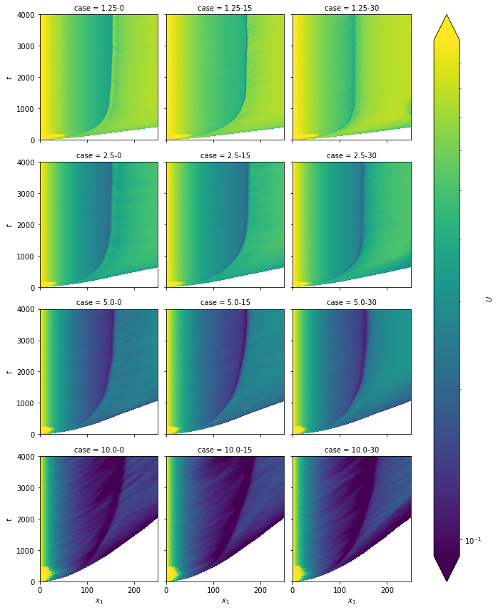
Underflow depth: $\( H(x_1,t) = \dfrac{(Uh)^2}{U^2h} \)$
ds["H"] = ds.Uh ** 2.0 / ds.U2h
ds.H.attrs = {"name": "Flow depth", "long_name": r"$H$"}
ds.H.plot(col="case", col_wrap=3, robust=True);
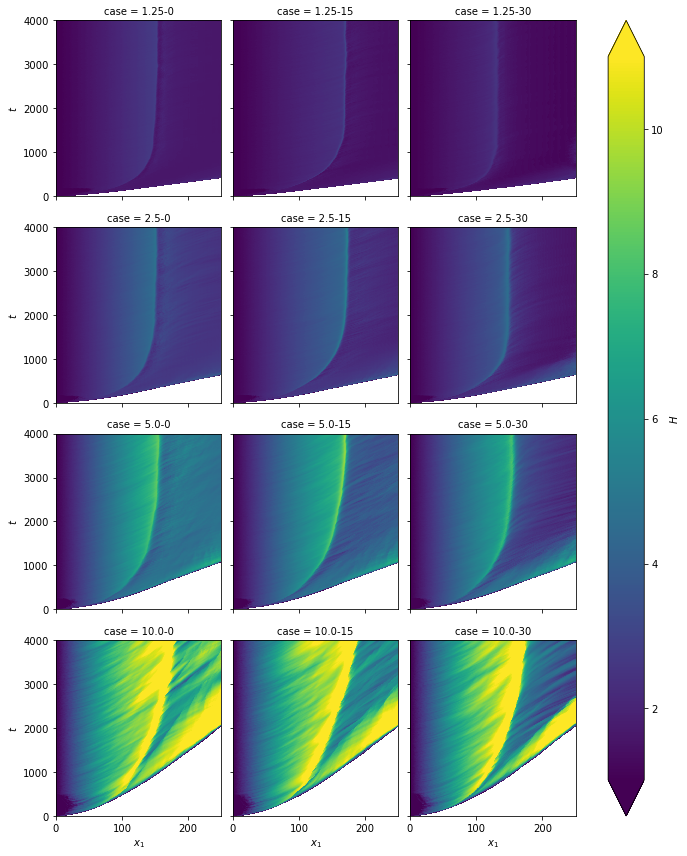
Mixing coefficient: $\( \gamma(x_1,t) = \dfrac{Uh}{1} - 1 \)$
ds["mixing"] = ds.U * ds.H - 1.0
ds.mixing.attrs = {"name": "Mixing coefficient", "long_name": r"$\gamma$"}
ds.mixing.plot(col="case", col_wrap=3, robust=True);
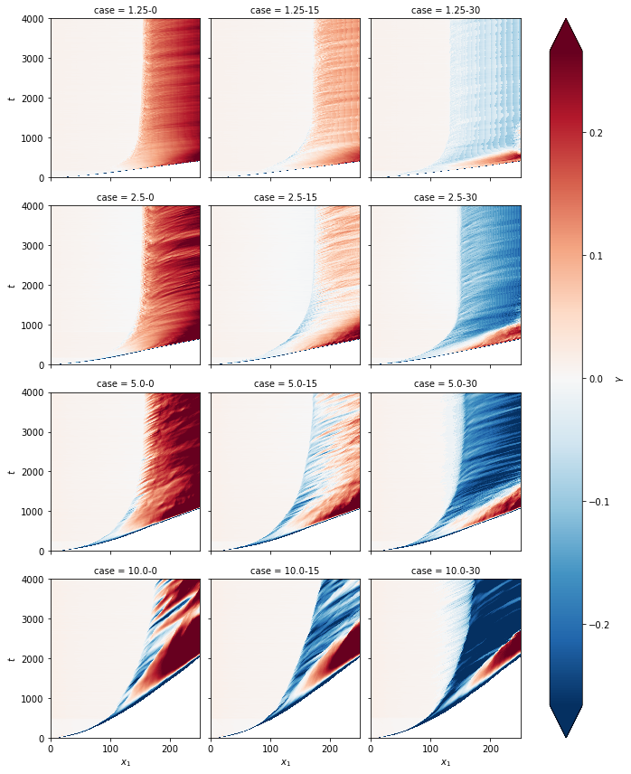
Layer-averaged total concentration: $\( C (x_1,t) = \dfrac{UCh}{Uh} \)$
ds["C"] = ds.UCh / ds.Uh
ds.C.attrs = {"name": "Layer-averaged Concentration", "long_name": r"$C$"}
ds.C.plot(col="case", col_wrap=3, robust=True);
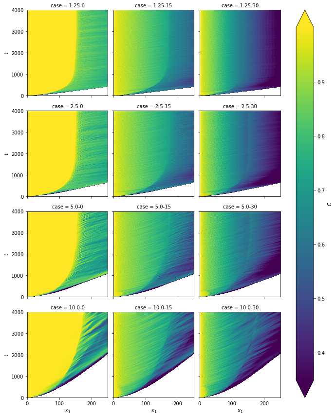
Densimetric Froude number: $\( Fr(x_1,t) = \dfrac{Uh}{\sqrt{CH^3}}Fr_0 \)$
ds["Fr"] = ds.Fr0 * ds.Uh * (ds.C ** (-1.0 / 2.0)) * (ds.H ** (-3.0 / 2.0))
ds.Fr.attrs = {"name": "Local densimetric Fround number", "long_name": r"$Fr$"}
ds.Fr.plot(col="case", col_wrap=3, robust=True, norm=matplotlib.colors.LogNorm());
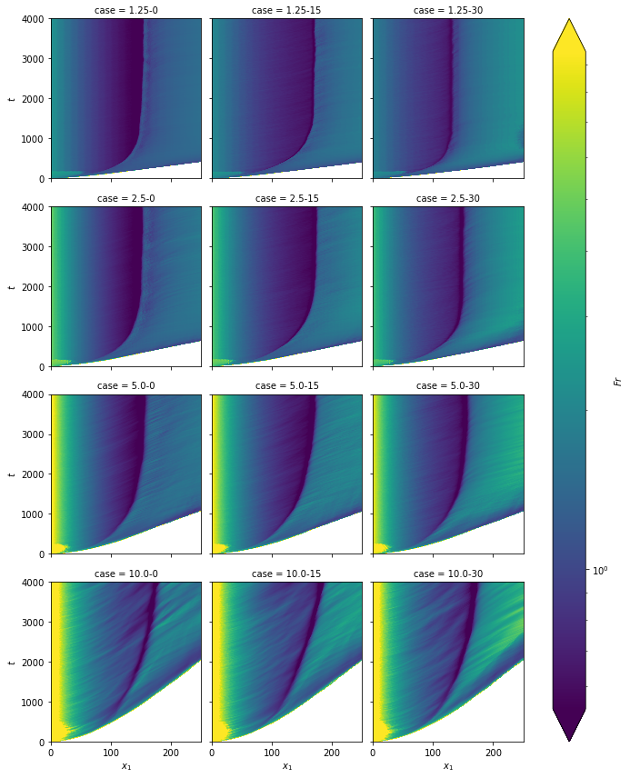
And plot the spanwise-avareged quantities:
Bed shear velocity:
ds.utau.plot(col='case', col_wrap=3, robust=True, norm=matplotlib.colors.LogNorm());
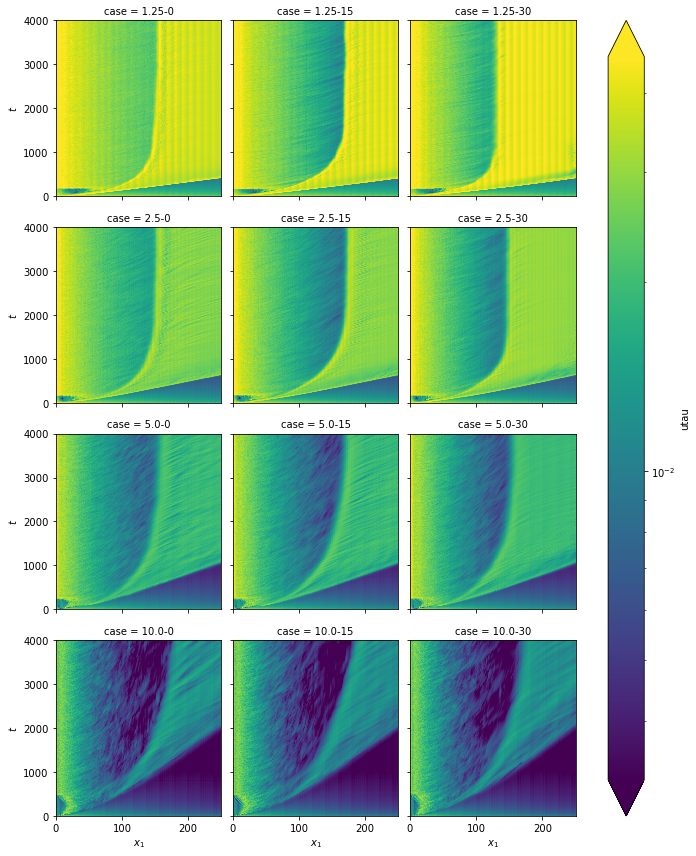
Deposition rate:
ds.dep.plot(col='case', col_wrap=3, robust=True);
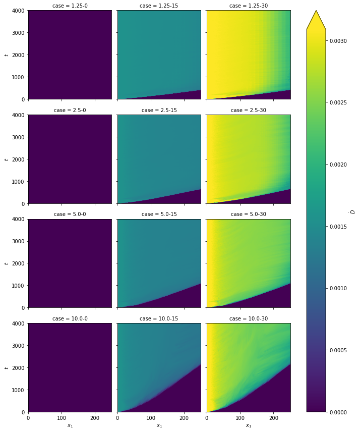
Other#
Some of the flow features can be obtained with the layer-averaged quantities, for instance:
The plunge point is located where the densimetric Froude number is minimum:
# Fill NaN with a large number just to avoid problems and get where it is minimum
ixp = ds.Fr.fillna(1e3).argmin(dim="x")
# Then obtain plunge point position (where it is inside the test section)
ds["xp"] = ds.x[ixp].where(ixp != ds.x.size - 1)
ds.xp.attrs = {"name": "Distance for plunging", "long_name": r"$x_p$"}
ds.xp.plot.line(x="t");
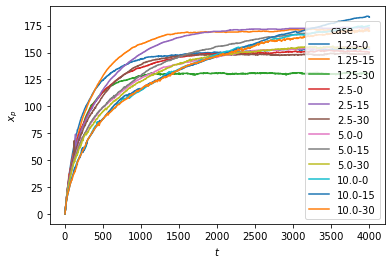
Densimetric Frounde number at plunge point:
# It is the minimum value inside the test section
ds["Frp"] = ds.Fr.min(dim="x").where(ixp != ds.x.size - 1)
ds.Frp.attrs = {
"name": "Densimetric Frounde number at plunge point",
"long_name": r"$Fr_p$",
}
ds.Frp.plot.line(x="t")
plt.axhline(0.45, c="k", ls="--")
plt.yscale("log")
C:\Users\felip\anaconda3\lib\site-packages\xarray\core\nputils.py:227: RuntimeWarning: All-NaN slice encountered
result = getattr(npmodule, name)(values, axis=axis, **kwargs)
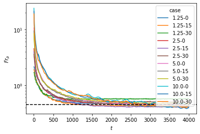
What is the time and case averaged densimetric Froude number at plunge point?
ds.Frp.sel(t=slice(4000, 6000)).mean("t").mean("case")
<xarray.DataArray 'Frp' ()> array(0.45329615)
- 0.4533
array(0.45329615)
Front position:
ixf = ds.Uh.argmin(dim="x")
ds["xf"] = ds.x[ixf].where(ds.t <= ds.t[ixf.argmax(dim="t")])
ds.xf.attrs = {"name": "Front position", "long_name": r"$x_f$"}
ds.xf.plot.line(x="t");
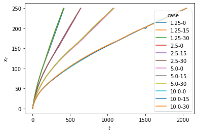
Front velocity: $\( u_f = \dfrac{d x_f}{d t} \)$
# a rolling average is used to reduce the noise
ds["uf"] = ds.xf.differentiate("t").rolling(t=50).mean()
ds.uf.attrs = {"name": "Front velocity", "long_name": r"$u_f$"}
ds.uf.plot.line(x="t");
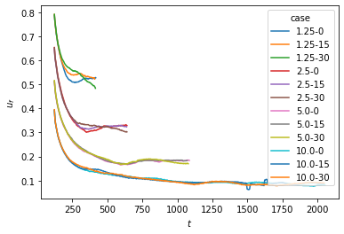
Flow evolution#
Lets load the spanwise-averaged planes from case 5.0-15 as an example:
xyplanes = xr.load_dataset("xy-planes-case-5.0-15.nc")
xyplanes
<xarray.Dataset>
Dimensions: (t: 801, x: 801, y: 121)
Coordinates:
* x (x) float32 0.0 0.3125 0.625 0.9375 ... 249.375 249.6875 250.0
* y (y) float32 16.875 16.734375 16.59375 ... 0.28125 0.140625 0.0
* t (t) float32 0.0 5.0 10.0 15.0 ... 3985.0 3990.0 3995.0 4000.0
Data variables:
phi (t, x, y) float32 0.0 0.0 0.0 ... 2.7094759e-11 1.6721305e-11
ux (t, x, y) float32 0.0 0.0 0.0 ... -0.040188063 -0.040198755
uy (t, x, y) float32 0.0 0.0 0.0 ... -2.8484597e-05 0.0
utau (t, x) float32 0.064214714 0.002707824 ... 0.018694893
dep (t, x) float32 0.0 0.0 0.0 ... 0.001327706 0.0013275965
uset float64 0.0015
Ri0 float64 0.01007
Fr0 float64 9.965
Re float64 2.5e+03
S float64 0.05
bed_position (x) float32 1.0 1.015625 1.03125 ... 13.46875 13.484375 13.5
Attributes:
title: Plunging condition for particle-laden flows over sloping bottom...
authors: F. N. Schuch, E. Meiburg & J. H. Silvestrini
url: https://github.com/fschuch/incompact3d_plunging_criterion
doi: 10.5281/zenodo.4044388
license: Creative Commons Attribution 4.0 International- t: 801
- x: 801
- y: 121
- x(x)float320.0 0.3125 0.625 ... 249.6875 250.0
- name :
- Streamwise coordinate
- long_name :
- $x_1$
array([ 0. , 0.3125, 0.625 , ..., 249.375 , 249.6875, 250. ], dtype=float32) - y(y)float3216.875 16.734375 ... 0.140625 0.0
- name :
- Vertical coordinate
- long_name :
- $x_2$
array([16.875 , 16.734375, 16.59375 , 16.453125, 16.3125 , 16.171875, 16.03125 , 15.890625, 15.75 , 15.609375, 15.46875 , 15.328125, 15.1875 , 15.046875, 14.90625 , 14.765625, 14.625 , 14.484375, 14.34375 , 14.203125, 14.0625 , 13.921875, 13.78125 , 13.640625, 13.5 , 13.359375, 13.21875 , 13.078125, 12.9375 , 12.796875, 12.65625 , 12.515625, 12.375 , 12.234375, 12.09375 , 11.953125, 11.8125 , 11.671875, 11.53125 , 11.390625, 11.25 , 11.109375, 10.96875 , 10.828125, 10.6875 , 10.546875, 10.40625 , 10.265625, 10.125 , 9.984375, 9.84375 , 9.703125, 9.5625 , 9.421875, 9.28125 , 9.140625, 9. , 8.859375, 8.71875 , 8.578125, 8.4375 , 8.296875, 8.15625 , 8.015625, 7.875 , 7.734375, 7.59375 , 7.453125, 7.3125 , 7.171875, 7.03125 , 6.890625, 6.75 , 6.609375, 6.46875 , 6.328125, 6.1875 , 6.046875, 5.90625 , 5.765625, 5.625 , 5.484375, 5.34375 , 5.203125, 5.0625 , 4.921875, 4.78125 , 4.640625, 4.5 , 4.359375, 4.21875 , 4.078125, 3.9375 , 3.796875, 3.65625 , 3.515625, 3.375 , 3.234375, 3.09375 , 2.953125, 2.8125 , 2.671875, 2.53125 , 2.390625, 2.25 , 2.109375, 1.96875 , 1.828125, 1.6875 , 1.546875, 1.40625 , 1.265625, 1.125 , 0.984375, 0.84375 , 0.703125, 0.5625 , 0.421875, 0.28125 , 0.140625, 0. ], dtype=float32) - t(t)float320.0 5.0 10.0 ... 3995.0 4000.0
- name :
- Time
- long_name :
- $t$
array([ 0., 5., 10., ..., 3990., 3995., 4000.], dtype=float32)
- phi(t, x, y)float320.0 0.0 ... 1.6721305e-11
- name :
- Concentration Field
- long_name :
- $c$
array([[[0.00000000e+00, 0.00000000e+00, 0.00000000e+00, ..., 0.00000000e+00, 0.00000000e+00, 0.00000000e+00], [0.00000000e+00, 0.00000000e+00, 0.00000000e+00, ..., 0.00000000e+00, 0.00000000e+00, 0.00000000e+00], [0.00000000e+00, 0.00000000e+00, 0.00000000e+00, ..., 0.00000000e+00, 0.00000000e+00, 0.00000000e+00], ..., [0.00000000e+00, 0.00000000e+00, 0.00000000e+00, ..., 0.00000000e+00, 0.00000000e+00, 0.00000000e+00], [0.00000000e+00, 0.00000000e+00, 0.00000000e+00, ..., 0.00000000e+00, 0.00000000e+00, 0.00000000e+00], [0.00000000e+00, 0.00000000e+00, 0.00000000e+00, ..., 0.00000000e+00, 0.00000000e+00, 0.00000000e+00]], [[0.00000000e+00, 0.00000000e+00, 0.00000000e+00, ..., 1.03826523e+00, 9.44521010e-01, 6.88998103e-01], [0.00000000e+00, 0.00000000e+00, 0.00000000e+00, ..., 1.03476787e+00, 9.41118240e-01, 6.86808646e-01], [0.00000000e+00, 0.00000000e+00, 0.00000000e+00, ..., 1.03867555e+00, 9.42656457e-01, 6.86390758e-01], ... [0.00000000e+00, 0.00000000e+00, 0.00000000e+00, ..., 2.45168857e-10, 6.48830364e-11, 2.11933734e-11], [0.00000000e+00, 0.00000000e+00, 0.00000000e+00, ..., 1.96932567e-10, 3.65059788e-11, 1.26693005e-11], [0.00000000e+00, 0.00000000e+00, 0.00000000e+00, ..., 1.41515105e-10, 2.62713306e-11, 1.42462934e-11]], [[0.00000000e+00, 0.00000000e+00, 0.00000000e+00, ..., 1.03825855e+00, 9.44697320e-01, 6.88938379e-01], [0.00000000e+00, 0.00000000e+00, 0.00000000e+00, ..., 1.03664207e+00, 9.40903008e-01, 6.85339510e-01], [0.00000000e+00, 0.00000000e+00, 0.00000000e+00, ..., 1.03279352e+00, 9.32705760e-01, 6.77617610e-01], ..., [0.00000000e+00, 0.00000000e+00, 0.00000000e+00, ..., 2.26780802e-10, 5.24386611e-11, 1.53452893e-11], [0.00000000e+00, 0.00000000e+00, 0.00000000e+00, ..., 1.75210679e-10, 3.07475191e-11, 1.21713776e-11], [0.00000000e+00, 0.00000000e+00, 0.00000000e+00, ..., 1.20950333e-10, 2.70947587e-11, 1.67213049e-11]]], dtype=float32) - ux(t, x, y)float320.0 0.0 ... -0.040198755
- name :
- Streamwise Velocity
- long_name :
- $u_1$
array([[[ 0. , 0. , 0. , ..., 1.0688505 , 1.0668404 , 1.068818 ], [ 0. , 0. , 0. , ..., 0. , 0. , 0. ], [ 0. , 0. , 0. , ..., 0. , 0. , 0. ], ..., [ 0. , 0. , 0. , ..., 0. , 0. , 0. ], [ 0. , 0. , 0. , ..., 0. , 0. , 0. ], [ 0. , 0. , 0. , ..., 0. , 0. , 0. ]], [[ 0. , 0. , 0. , ..., 1.0688424 , 1.068653 , 1.0612284 ], [ 0. , 0. , 0. , ..., 1.0595537 , 1.0586491 , 1.0523875 ], [ 0. , 0. , 0. , ..., 1.0497624 , 1.0479091 , 1.0415454 ], ... [ 0. , 0. , 0. , ..., -0.04050307, -0.04052111, -0.0405319 ], [ 0. , 0. , 0. , ..., -0.04061428, -0.04063921, -0.04064276], [ 0. , 0. , 0. , ..., -0.04069244, -0.04071048, -0.04072122]], [[ 0. , 0. , 0. , ..., 1.1616069 , 1.2385147 , 1.2674499 ], [ 0. , 0. , 0. , ..., 1.1617756 , 1.2519102 , 1.2925639 ], [ 0. , 0. , 0. , ..., 1.1764224 , 1.2366723 , 1.263374 ], ..., [ 0. , 0. , 0. , ..., -0.03996496, -0.03998281, -0.03999346], [ 0. , 0. , 0. , ..., -0.0400837 , -0.04010848, -0.04011202], [ 0. , 0. , 0. , ..., -0.04017003, -0.04018806, -0.04019875]]], dtype=float32) - uy(t, x, y)float320.0 0.0 0.0 ... -2.8484597e-05 0.0
- name :
- Vertical Velocity
- long_name :
- $u_2$
array([[[ 0.00000000e+00, 0.00000000e+00, 0.00000000e+00, ..., -3.25344663e-05, -9.96725168e-04, 8.26145289e-04], [ 0.00000000e+00, 0.00000000e+00, 0.00000000e+00, ..., 0.00000000e+00, 0.00000000e+00, 0.00000000e+00], [ 0.00000000e+00, 0.00000000e+00, 0.00000000e+00, ..., 0.00000000e+00, 0.00000000e+00, 0.00000000e+00], ..., [ 0.00000000e+00, 0.00000000e+00, 0.00000000e+00, ..., 0.00000000e+00, 0.00000000e+00, 0.00000000e+00], [ 0.00000000e+00, 0.00000000e+00, 0.00000000e+00, ..., 0.00000000e+00, 0.00000000e+00, 0.00000000e+00], [ 0.00000000e+00, 0.00000000e+00, 0.00000000e+00, ..., 0.00000000e+00, 0.00000000e+00, 0.00000000e+00]], [[ 0.00000000e+00, 0.00000000e+00, 0.00000000e+00, ..., -8.05330742e-03, -3.88078485e-03, 0.00000000e+00], [ 0.00000000e+00, 0.00000000e+00, 0.00000000e+00, ..., -9.49160475e-03, -4.55480907e-03, 0.00000000e+00], [ 0.00000000e+00, 0.00000000e+00, 0.00000000e+00, ..., -9.92371608e-03, -4.75022988e-03, 0.00000000e+00], ... -1.20326797e-04, -6.00528256e-05, 0.00000000e+00], [ 0.00000000e+00, 0.00000000e+00, 0.00000000e+00, ..., -8.39787899e-05, -4.20185643e-05, 0.00000000e+00], [ 0.00000000e+00, 0.00000000e+00, 0.00000000e+00, ..., -4.90347920e-05, -2.45543652e-05, 0.00000000e+00]], [[ 0.00000000e+00, 0.00000000e+00, 0.00000000e+00, ..., 1.70091894e-02, 1.49879968e-02, 0.00000000e+00], [ 0.00000000e+00, 0.00000000e+00, 0.00000000e+00, ..., 2.90255132e-03, 3.66300374e-04, 0.00000000e+00], [ 0.00000000e+00, 0.00000000e+00, 0.00000000e+00, ..., -2.52630506e-02, -2.06915364e-02, 0.00000000e+00], ..., [ 0.00000000e+00, 0.00000000e+00, 0.00000000e+00, ..., -1.26976898e-04, -6.34007738e-05, 0.00000000e+00], [ 0.00000000e+00, 0.00000000e+00, 0.00000000e+00, ..., -9.10901435e-05, -4.55889858e-05, 0.00000000e+00], [ 0.00000000e+00, 0.00000000e+00, 0.00000000e+00, ..., -5.68803371e-05, -2.84845974e-05, 0.00000000e+00]]], dtype=float32) - utau(t, x)float320.064214714 ... 0.018694893
array([[0.06421471, 0.00270782, 0.0013406 , ..., 0. , 0. , 0. ], [0.06085397, 0.05927191, 0.0576125 , ..., 0.01437514, 0.01412304, 0.01416974], [0.05704392, 0.05535008, 0.0537332 , ..., 0.01359409, 0.0134089 , 0.01335811], ..., [0.0585585 , 0.05663158, 0.05431736, ..., 0.0180604 , 0.01833731, 0.01867476], [0.05675026, 0.05644575, 0.05367268, ..., 0.01817203, 0.01823947, 0.01847443], [0.05496647, 0.05348277, 0.05230506, ..., 0.0186661 , 0.01861479, 0.01869489]], dtype=float32) - dep(t, x)float320.0 0.0 ... 0.0013275965
- name :
- Deposition rate
- long_name :
- $\dot{D}$
array([[0. , 0. , 0. , ..., 0. , 0. , 0. ], [0.00157904, 0.00157865, 0.00157575, ..., 0. , 0. , 0. ], [0.00157904, 0.00157894, 0.00157904, ..., 0. , 0. , 0. ], ..., [0.00157904, 0.00157902, 0.00157898, ..., 0.00132884, 0.00132924, 0.00132933], [0.00157904, 0.00157902, 0.00157898, ..., 0.00132764, 0.00132745, 0.00132739], [0.00157904, 0.00157901, 0.00157899, ..., 0.00132772, 0.00132771, 0.0013276 ]], dtype=float32) - uset()float640.0015
- name :
- Settling Velocity
- long_name :
- $u_s$
array(0.0015)
- Ri0()float640.01007
- name :
- Initial Richardson Number
- long_name :
- $Ri_0$
array(0.01007012)
- Fr0()float649.965
- name :
- Initial densimetric Froude Number
- long_name :
- $Fr_0$
array(9.96512551)
- Re()float642.5e+03
- name :
- Reynolds Number
- long_name :
- $Re$
array(2500.)
- S()float640.05
- name :
- Bed Slop
- long_name :
- $S$
array(0.05)
- bed_position(x)float321.0 1.015625 ... 13.484375 13.5
- name :
- Bed position
- long_name :
- $x_{2r}$
array([ 1. , 1.015625, 1.03125 , 1.046875, 1.0625 , 1.078125, 1.09375 , 1.109375, 1.125 , 1.140625, 1.15625 , 1.171875, 1.1875 , 1.203125, 1.21875 , 1.234375, 1.25 , 1.265625, 1.28125 , 1.296875, 1.3125 , 1.328125, 1.34375 , 1.359375, 1.375 , 1.390625, 1.40625 , 1.421875, 1.4375 , 1.453125, 1.46875 , 1.484375, 1.5 , 1.515625, 1.53125 , 1.546875, 1.5625 , 1.578125, 1.59375 , 1.609375, 1.625 , 1.640625, 1.65625 , 1.671875, 1.6875 , 1.703125, 1.71875 , 1.734375, 1.75 , 1.765625, 1.78125 , 1.796875, 1.8125 , 1.828125, 1.84375 , 1.859375, 1.875 , 1.890625, 1.90625 , 1.921875, 1.9375 , 1.953125, 1.96875 , 1.984375, 2. , 2.015625, 2.03125 , 2.046875, 2.0625 , 2.078125, 2.09375 , 2.109375, 2.125 , 2.140625, 2.15625 , 2.171875, 2.1875 , 2.203125, 2.21875 , 2.234375, 2.25 , 2.265625, 2.28125 , 2.296875, 2.3125 , 2.328125, 2.34375 , 2.359375, 2.375 , 2.390625, 2.40625 , 2.421875, 2.4375 , 2.453125, 2.46875 , 2.484375, 2.5 , 2.515625, 2.53125 , 2.546875, 2.5625 , 2.578125, 2.59375 , 2.609375, 2.625 , 2.640625, 2.65625 , 2.671875, 2.6875 , 2.703125, 2.71875 , 2.734375, 2.75 , 2.765625, 2.78125 , 2.796875, 2.8125 , 2.828125, 2.84375 , 2.859375, ... 11.6875 , 11.703125, 11.71875 , 11.734375, 11.75 , 11.765625, 11.78125 , 11.796875, 11.8125 , 11.828125, 11.84375 , 11.859375, 11.875 , 11.890625, 11.90625 , 11.921875, 11.9375 , 11.953125, 11.96875 , 11.984375, 12. , 12.015625, 12.03125 , 12.046875, 12.0625 , 12.078125, 12.09375 , 12.109375, 12.125 , 12.140625, 12.15625 , 12.171875, 12.1875 , 12.203125, 12.21875 , 12.234375, 12.25 , 12.265625, 12.28125 , 12.296875, 12.3125 , 12.328125, 12.34375 , 12.359375, 12.375 , 12.390625, 12.40625 , 12.421875, 12.4375 , 12.453125, 12.46875 , 12.484375, 12.5 , 12.515625, 12.53125 , 12.546875, 12.5625 , 12.578125, 12.59375 , 12.609375, 12.625 , 12.640625, 12.65625 , 12.671875, 12.6875 , 12.703125, 12.71875 , 12.734375, 12.75 , 12.765625, 12.78125 , 12.796875, 12.8125 , 12.828125, 12.84375 , 12.859375, 12.875 , 12.890625, 12.90625 , 12.921875, 12.9375 , 12.953125, 12.96875 , 12.984375, 13. , 13.015625, 13.03125 , 13.046875, 13.0625 , 13.078125, 13.09375 , 13.109375, 13.125 , 13.140625, 13.15625 , 13.171875, 13.1875 , 13.203125, 13.21875 , 13.234375, 13.25 , 13.265625, 13.28125 , 13.296875, 13.3125 , 13.328125, 13.34375 , 13.359375, 13.375 , 13.390625, 13.40625 , 13.421875, 13.4375 , 13.453125, 13.46875 , 13.484375, 13.5 ], dtype=float32)
- title :
- Plunging condition for particle-laden flows over sloping bottoms: three-dimensional turbulence-resolving simulations
- authors :
- F. N. Schuch, E. Meiburg & J. H. Silvestrini
- url :
- https://github.com/fschuch/incompact3d_plunging_criterion
- doi :
- 10.5281/zenodo.4044388
- license :
- Creative Commons Attribution 4.0 International
Now, lets select some values as time reference:
selected_times = [250, 500, 1000, 2000, 4000]
And plot total concentration field (notice that matplotlib can be used for adjustments):
xyplanes.phi.sel(t=selected_times).plot(col="t", x="x")
plt.gca().invert_yaxis()
plt.show();
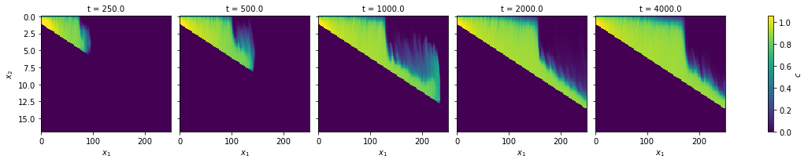
Now the velocity components:
for var in "ux uy".split():
xyplanes[var].sel(t=selected_times).plot(col="t", x="x", robust=True)
plt.gca().invert_yaxis()
plt.show();
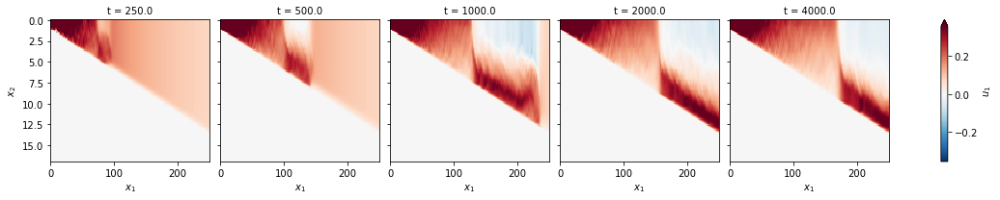
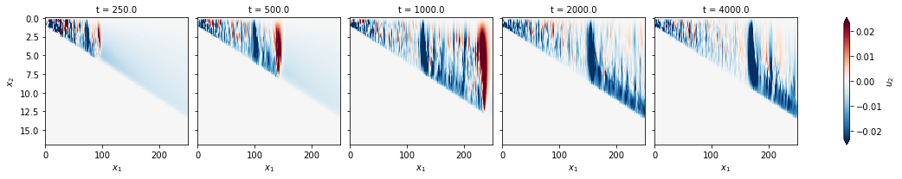
We can extract a signal in some location:
for var in "ux uy phi".split():
xyplanes[var].sel(x=50.0, y=0.5, method="nearest").plot()
plt.show();
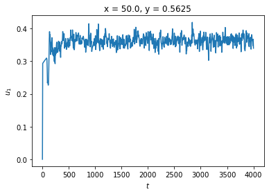
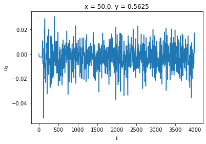
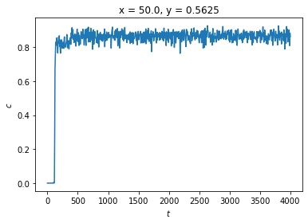
and we can go back to ds and plot some variables for all cases at reference times:
for var in "U Fr mixing utau".split():
ds[var].sel(t=selected_times).plot(hue="t", x="x", col="case", col_wrap=3)
plt.show();
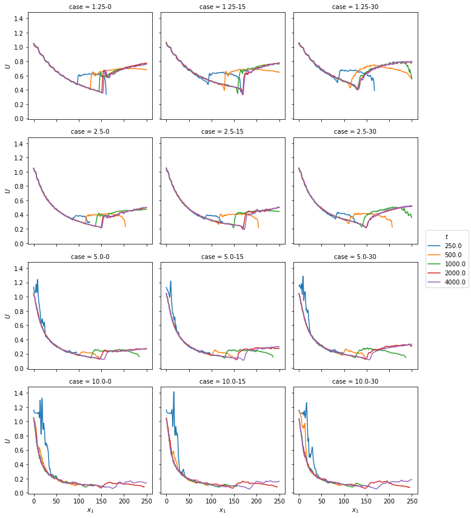
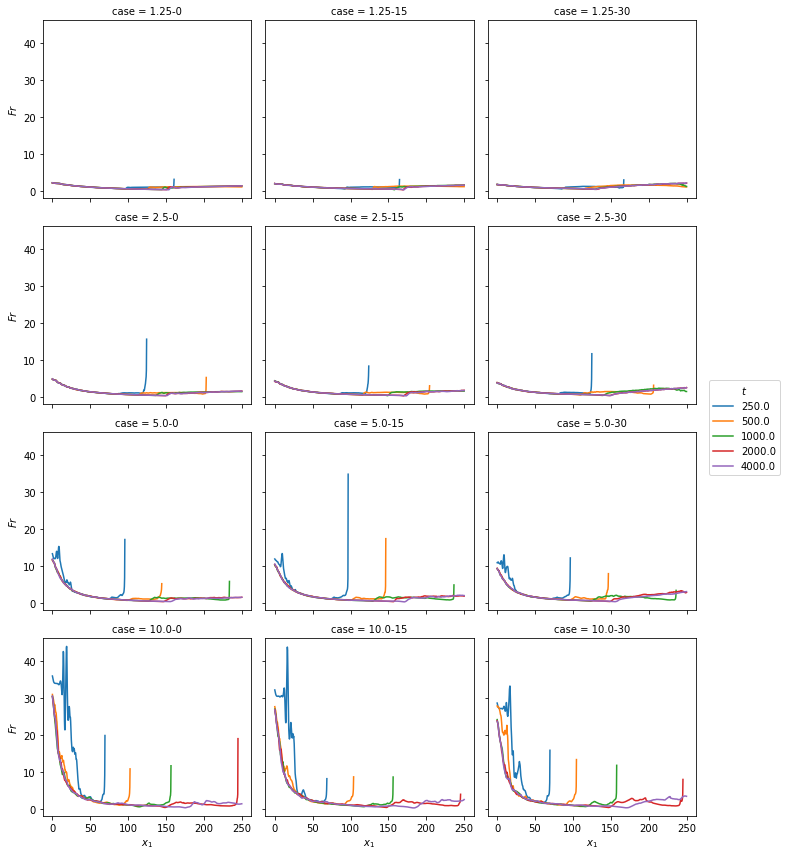
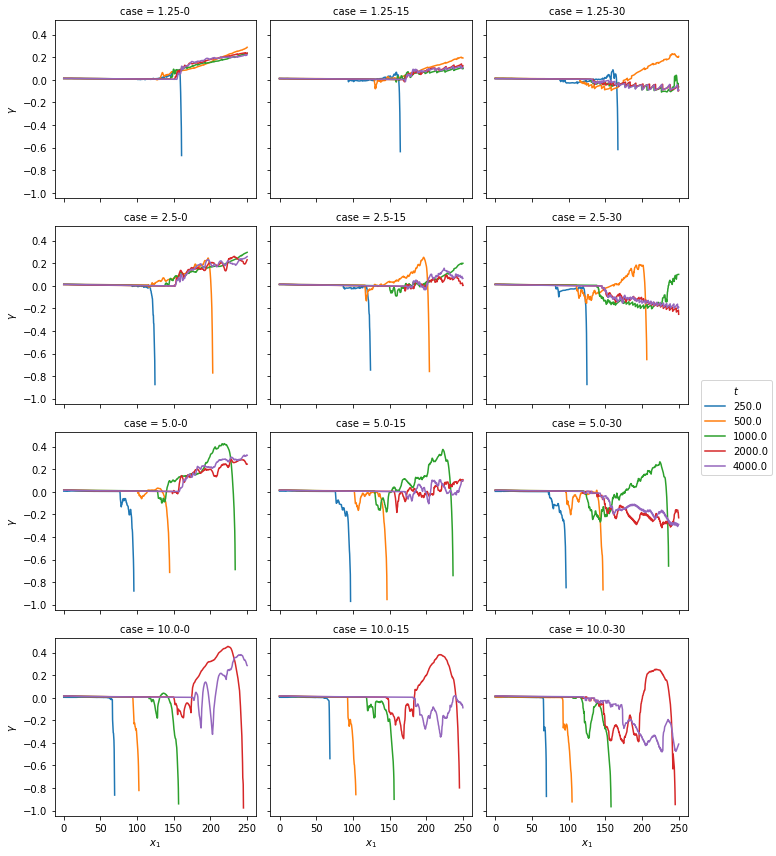
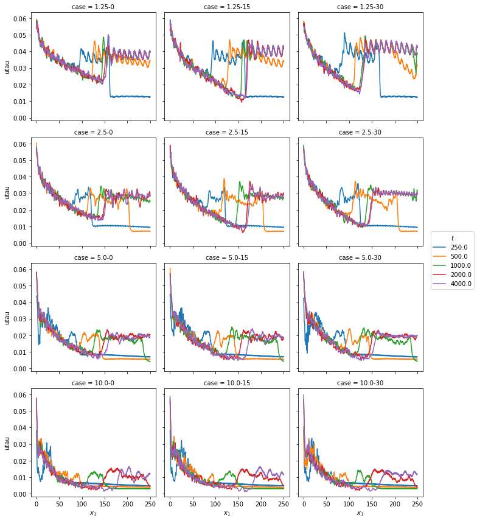